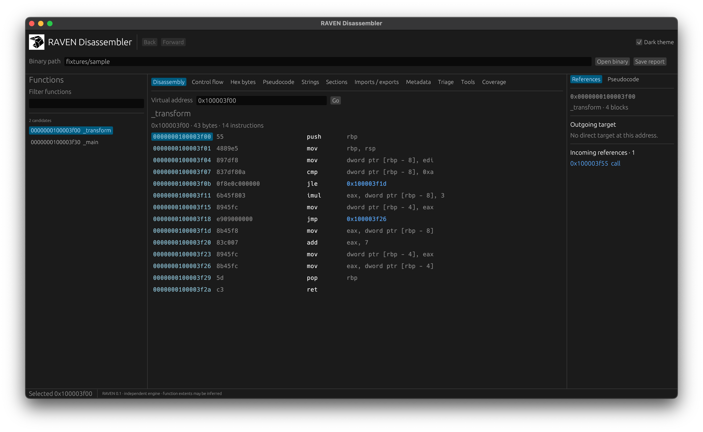

DESKTOP
Follow references
Jump between instructions, the control-flow graph and the hex view. Keep function names and notes with revisioned annotations.
DESKTOP BINARY ANALYSIS
RAVEN brings disassembly, control-flow graphs, hex inspection, and pseudocode into a native workbench. The same engine powers its headless CLI and MCP server.
Windows · macOS · Linux

Load ELF, PE/COFF, thin Mach-O, and raw binaries. Analyze x86, x86-64, ARM, Thumb, and ARM64 code from any supported host.
DESKTOP
Jump between instructions, the control-flow graph and the hex view. Keep function names and notes with revisioned annotations.
HEADLESS
Use the CLI for JSON reports, batch analysis, embedded DWARF types and supported Linux ELF core dumps.
MCP
Use 30 stdio tools to query the analysis engine. Share revisioned notes with teammates through a project-scoped session over SSH.
INSTALLERS
Choose your operating system and the CPU of the machine running RAVEN. Each package includes the GUI, CLI and MCP server.
Loading release availability.
Setup executable or portable ZIP.
Open the disk image and drag RAVEN to Applications.
Install the DEB or extract the portable archive.
Windows installers are unsigned. macOS apps are ad-hoc signed and are not notarized. Linux packages target an Ubuntu 22.04-compatible runtime. Native pseudocode currently covers a subset of x86-64 integer functions. Broader pseudocode uses an optional Ghidra installation.